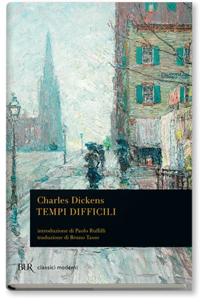
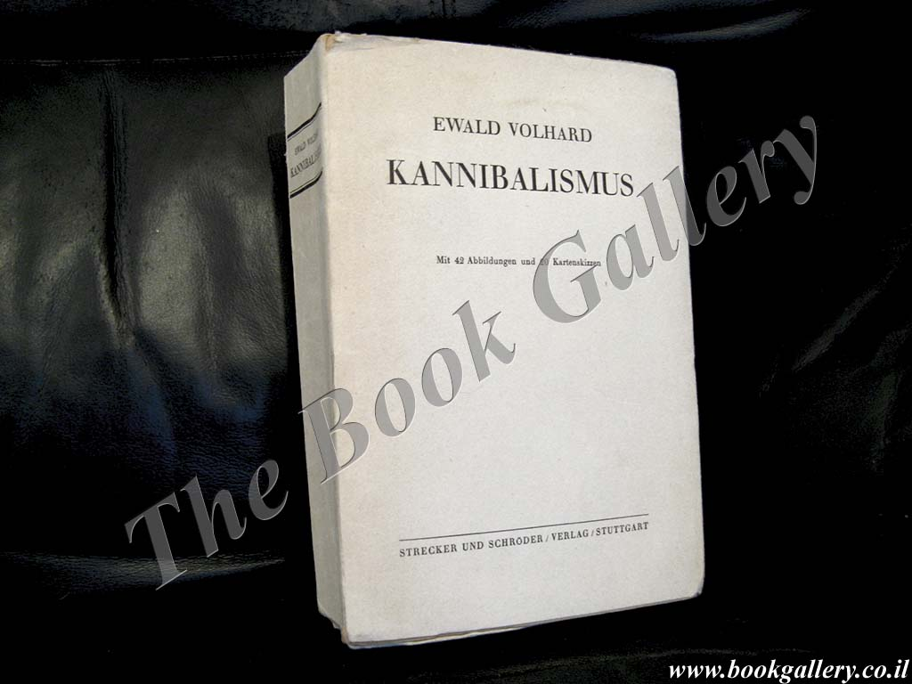
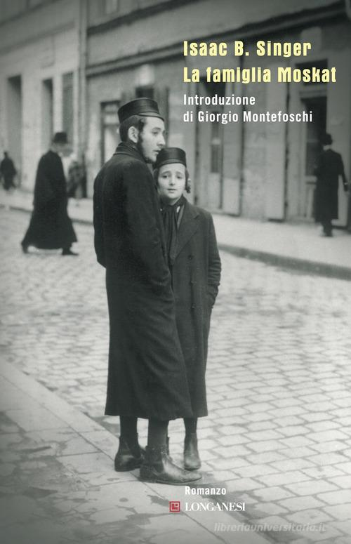
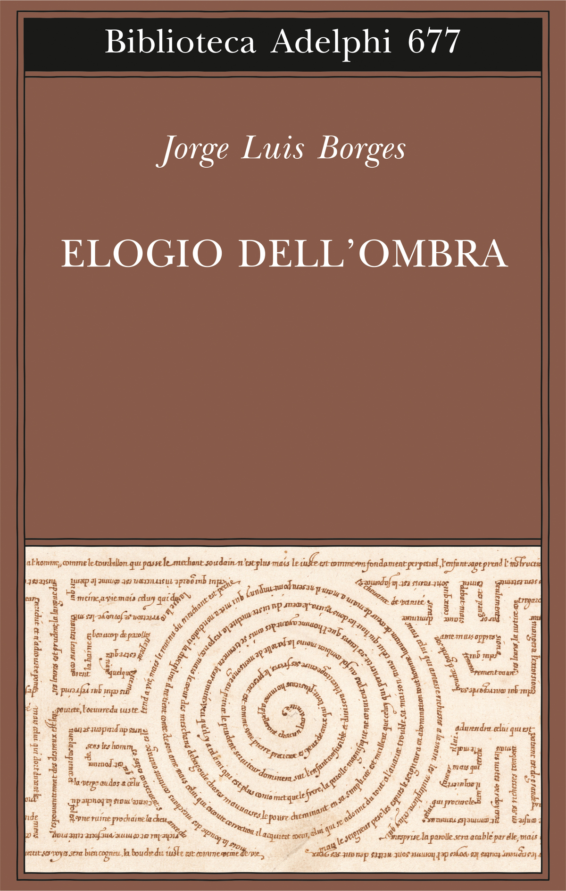
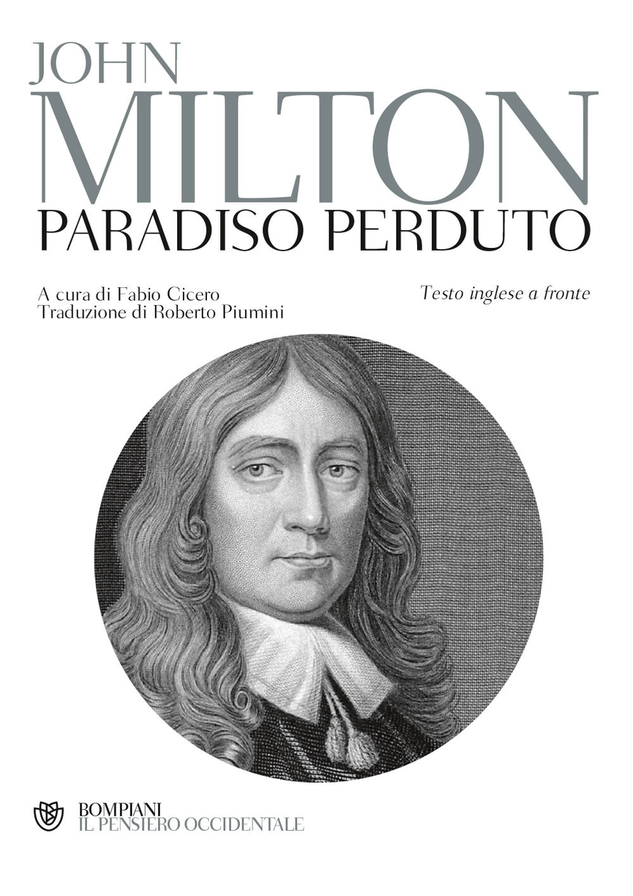
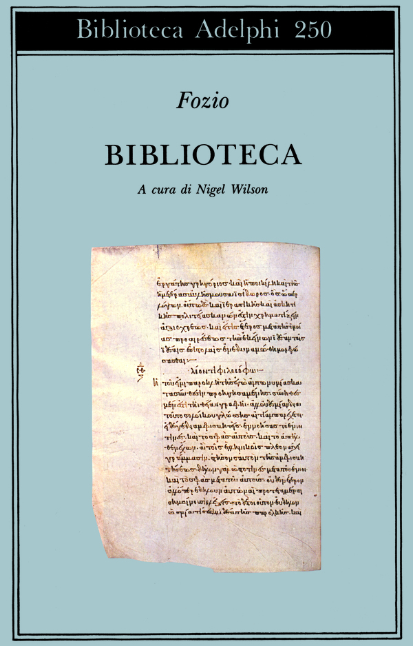
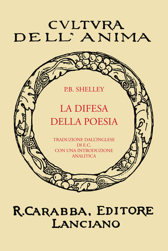

22:20 · 11 OPERE
Antilogie. Saggio sulla storia delle storie mai scritte.
Il filo del discorso
La lettura di Antilogie propone una storia possibile dei pensieri e dei libri rimasti ai margini, scomparsi o mai realizzati. Il saggio, presentato da Dr Divago come pubblicato nel 1999 sulla rivista Oros, parte dal rifiuto di identificare la filosofia con il prestigio dei nomi e delle istituzioni. Il ricordo di Utz di Bruce Chatwin introduce un gruppo di scrittori e pensatori che svolgono lavori umili: la distanza fra ruolo sociale e individuo diventa il primo tema della riflessione. Seguono il racconto di un pianista incarcerato e alcune immagini del vedere, dell’amare e dell’avvicinarsi agli altri. Il rapporto fra sapere e potere passa poi attraverso figure antiche e aneddoti sulla lingua, prima della critica all’idea di una cultura ufficiale. La parte centrale si concentra sulle perdite: persone messe a tacere, opere dimenticate e manoscritti distrutti. La famiglia Moskat di Singer fornisce il caso narrativo di un libro bruciato; The Unending Gift di Borges trasforma invece un quadro mai ricevuto in una possibilità che continua a vivere. Il saggio contrappone quindi il successo misurabile alle aspirazioni capaci di accettare un fallimento fecondo, richiamando Milton e un articolo di Lawrence Shames. La Biblioteca di Fozio apre infine il tema della sopravvivenza dei testi attraverso altre letture. Nella conclusione, con Shelley, il poeta è presentato come creatore di relazioni e di possibilità condivise. È una meditazione filosofica e letteraria: gli episodi narrati, le figure immaginarie e gli aneddoti biografici non vengono assunti tutti come eventi storici documentati.
I libri nel discorso

Utz
Copertina: Adelphi · gli Adelphi 163, 2000 · traduzione di Dario Mazzone
Immagine autentica dell’opera, controllata visivamente; l’edizione di riferimento non è attribuita al filmato.
Chatwin e il personaggio Kaspar Utz rendono riconoscibile il romanzo Utz.
Passaggio 1:00 ↗ · Fonti e libro ↗
Tempi difficili
Copertina: BUR · 1990 · introduzione Paolo Ruffilli, traduzione Bruno Tasso
Immagine autentica dell’opera, controllata visivamente; l’edizione di riferimento non è attribuita al filmato.
Dickens e Tempi difficili sono espliciti.
Passaggio 5:51 ↗ · Fonti e libro ↗
Bibbia
Copertina: San Paolo, 2014 · Nuova Versione dai Testi Antichi · edizione di riferimento
Il Qoèlet è nominato nel passo su schiavi e principi; Isaia è richiamato più avanti.
Passaggio 8:21 ↗ · Fonti e libro ↗
Il capitale
Copertina: Editori Riuniti · Libro primo
Marx e il suo Capitale sono nominati.
Passaggio 11:06 ↗ · Fonti e libro ↗
Tractatus logico-philosophicus
Copertina del volume che comprende il Tractatus: Einaudi · Tractatus logico-philosophicus e Quaderni 1914–1916 · 2009
Copertina del volume Einaudi che comprende sia il Tractatus sia i Quaderni 1914–1916. La voce identifica il Tractatus; l’ISBN appartiene al volume contenitore e l’edizione non è accertata nel filmato.
Il Tractatus è nominato nel racconto sul titolo universitario di Wittgenstein.
Passaggio 11:20 ↗ · Fonti e libro ↗
Kannibalismus (Il cannibalismo)
Identificazione probabile
Fotografia della copertina dell’edizione del 1939: Stuttgart, Strecker und Schröder · 1939 · Studien zur Kulturkunde 5
Fotografia autentica dell’esemplare catalogato da The Book Gallery: copertina editoriale con autore, titolo ed editore, non frontespizio o legatura di un altro volume. Il watermark della libreria rimane visibile; nessun ISBN assegnato retroattivamente.
Ewald Volhard e un volume sul cannibalismo suggeriscono Kannibalismus; il titolo non è annunciato.
Passaggio 12:43 ↗ · Fonti e libro ↗
La famiglia Moskat
Copertina: Longanesi · 2010 · traduzione Bruno Fonzi, introduzione Giorgio Montefoschi
Immagine autentica dell’opera, controllata visivamente; l’edizione di riferimento non è attribuita al filmato.
Singer e La famiglia Moskat sono annunciati; il manoscritto di Asa Heshel è interno alla finzione.
Passaggio 13:09 ↗ · Fonti e libro ↗
The Unending Gift (Il dono infinito)
Copertina della raccolta Elogio dell’ombra: Adelphi · Elogio dell’ombra, Biblioteca Adelphi 677, 2017 · cura Tommaso Scarano
Copertina autentica della raccolta che contiene The Unending Gift. Il dono infinito è il titolo italiano usato nel parlato; il singolo testo non è un libro autonomo. Esclusa la copertina di L’artefice, conservata privatamente come candidato errato.
Borges e Il dono infinito sono annunciati e il testo è letto in traduzione; titolo originale The Unending Gift.
Passaggio 14:15 ↗ · Fonti e libro ↗
Paradiso perduto
Copertina: Bompiani, Il pensiero occidentale, 2009
Edizione con testo inglese a fronte, a cura di Fabio Cicero e traduzione di Roberto Piumini. Non è l’edizione identificata nel video; l’identificazione dell’opera nella citazione resta probabile.
Il Paradiso perduto e Milton sono espliciti nel brano attribuito a Shames.
Passaggio 17:58 ↗ · Fonti e libro ↗
Biblioteca
Copertina dell’edizione antologica della Biblioteca: Adelphi · Biblioteca Adelphi 250, 1992 · scelta a cura di Nigel Wilson
Copertina autentica del volume Adelphi curato da Nigel Wilson e tradotto da Claudio Bevegni. È una scelta delle schede della Biblioteca, come precisa il catalogo ufficiale, non l’edizione integrale di tutte le schede.
Fozio e la sua Biblioteca sono annunciati.
Passaggio 19:41 ↗ · Fonti e libro ↗
La difesa della poesia
Identificazione probabile
Copertina della ristampa anastatica Carabba: Carabba · Cultura dell’Anima · riproduzione anastatica, traduzione e introduzione di Emilio Cecchi
Copertina autentica della riproduzione anastatica pubblicata da Carabba. L’ISBN è quello della ristampa moderna; non si deduce dalla grafica un anno di edizione presente nel video.
Shelley e i poeti come legislatori non riconosciuti suggeriscono La difesa della poesia; titolo non annunciato.
Passaggio 21:02 ↗ · Fonti e libro ↗